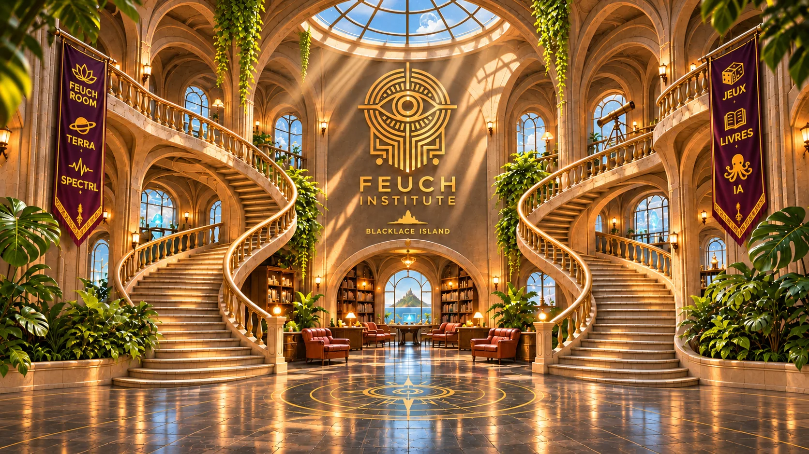
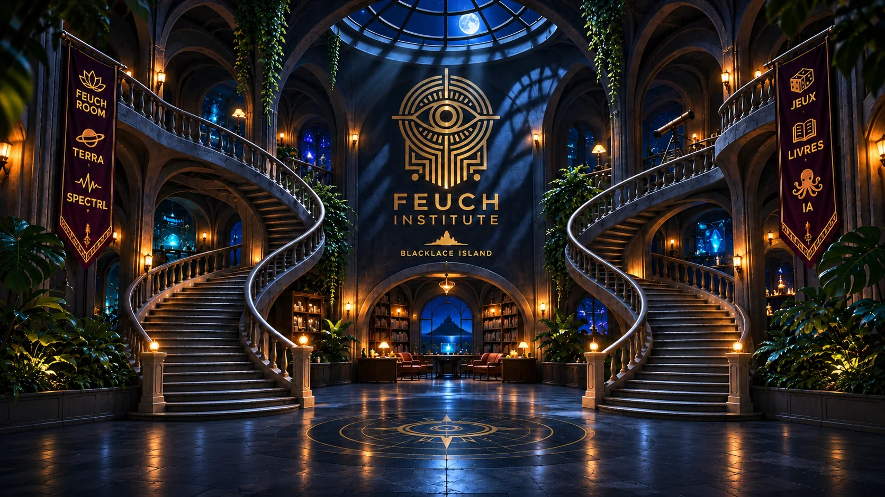
Blacklace Island
Feuch Institute
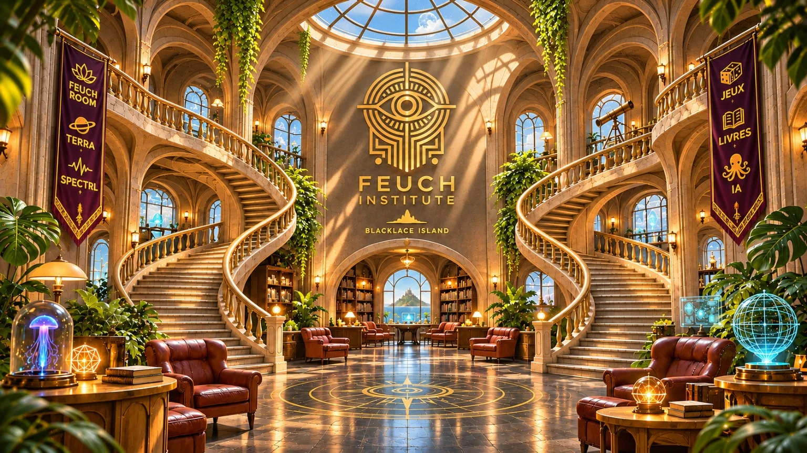
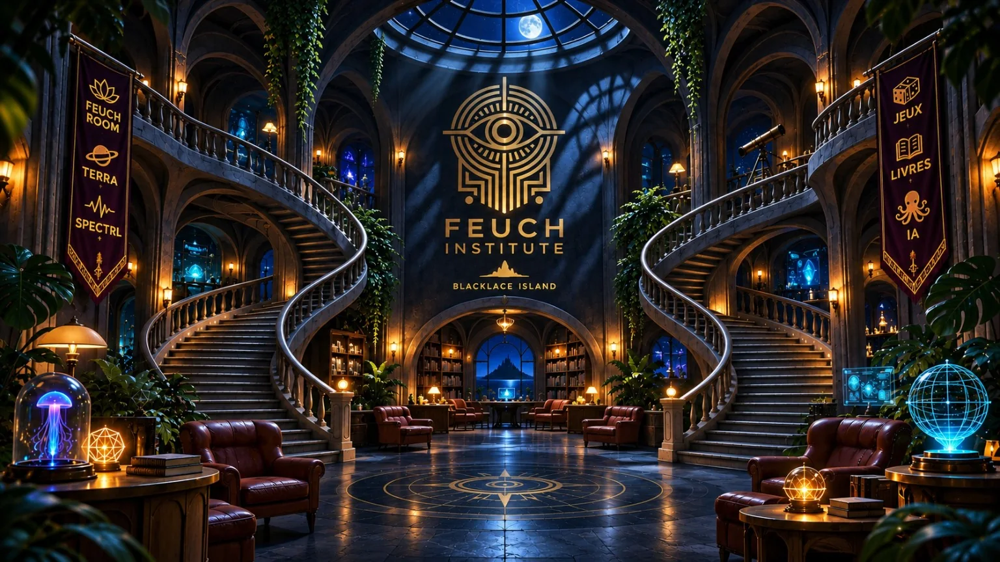


Blacklace Island


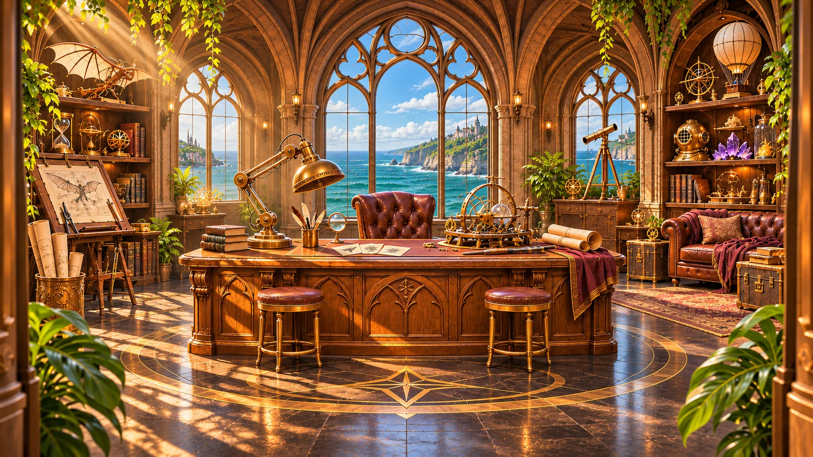
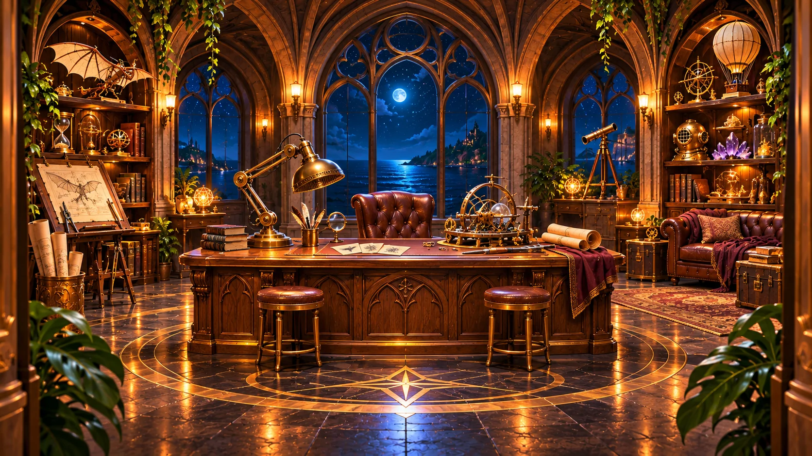
L’atelier des prototypes
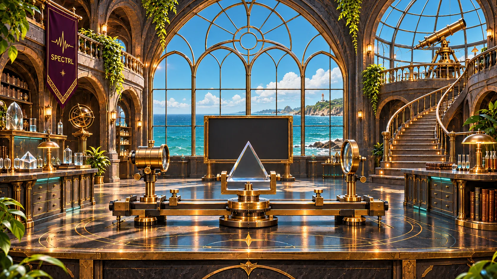
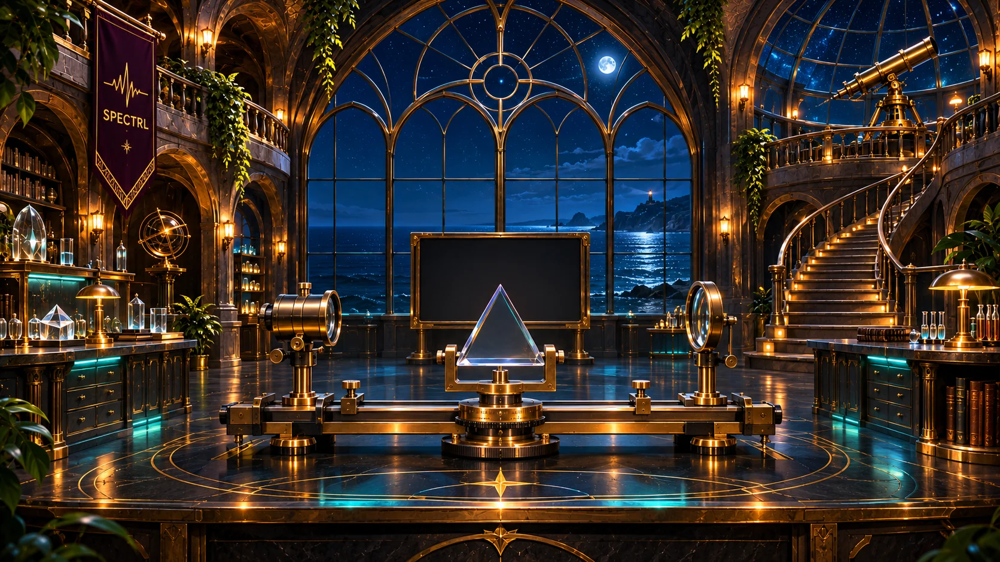
L’observatoire spectral
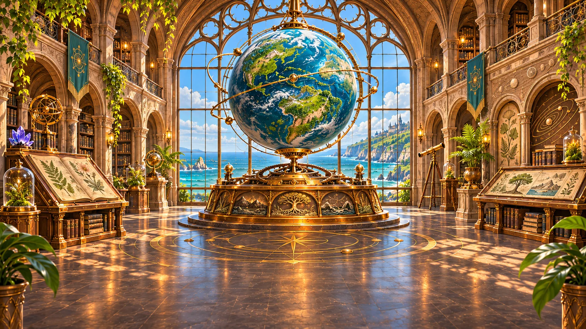
Fable cosmique
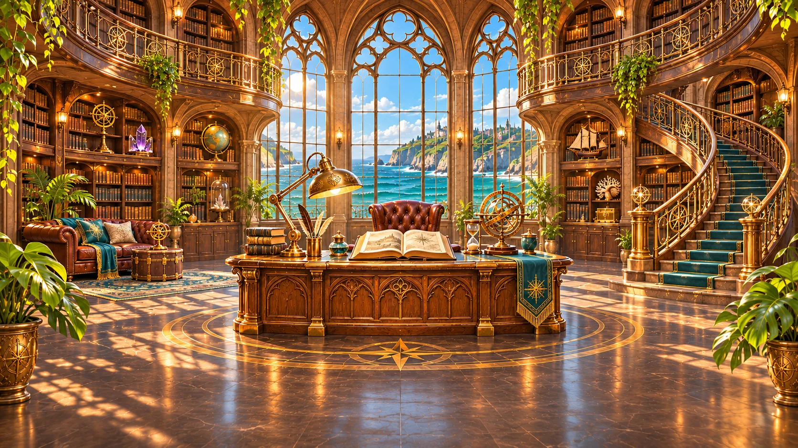
Les livres de Benoît Lubert
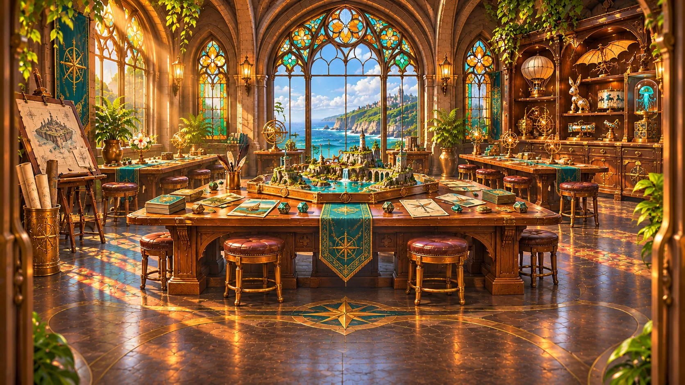
Cartes, dés et prototypes
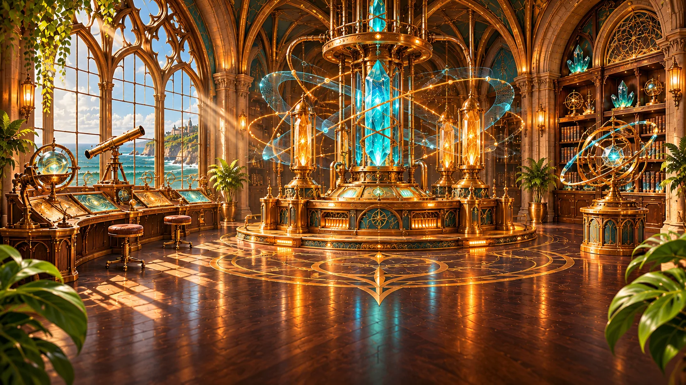
Signaux et présences
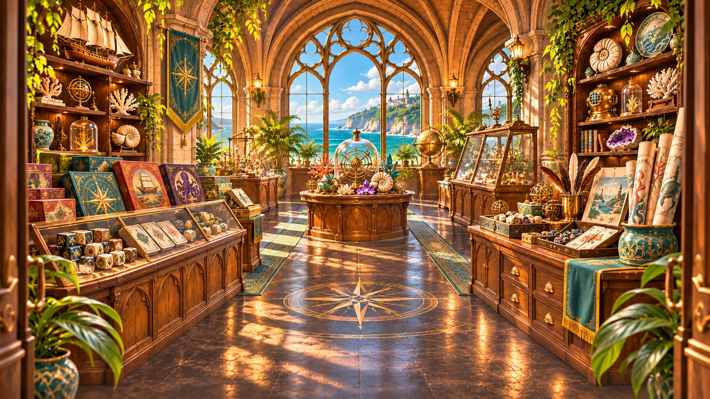
Livres, jeux et curiosités
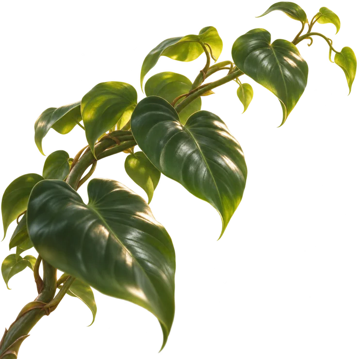
Souris, glissement tactile ou touches fléchées
Depuis la Feuch Room, ouvre les expériences et les protocoles jouables du laboratoire.
Le décor mène à l’application de l’observatoire.
Une fable cosmique sur ce que l’on transmet en apprenant à quelqu’un à observer le monde.
Les livres du catalogue de Benoît Lubert. Chaque titre ouvre sa fiche Amazon.
Les jeux déjà accessibles en ligne.
Les portes vers les expériences publiques de l’île.
Parcourir les rayons de l’Institut ou ouvrir le catalogue d’origine.